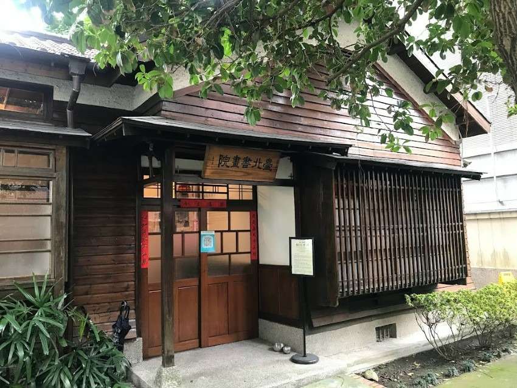
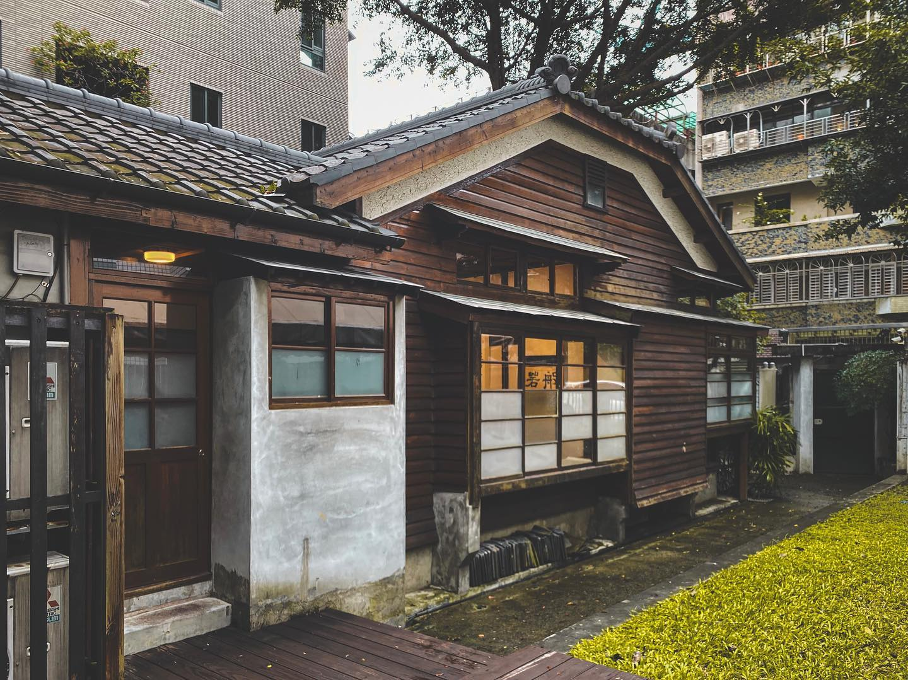
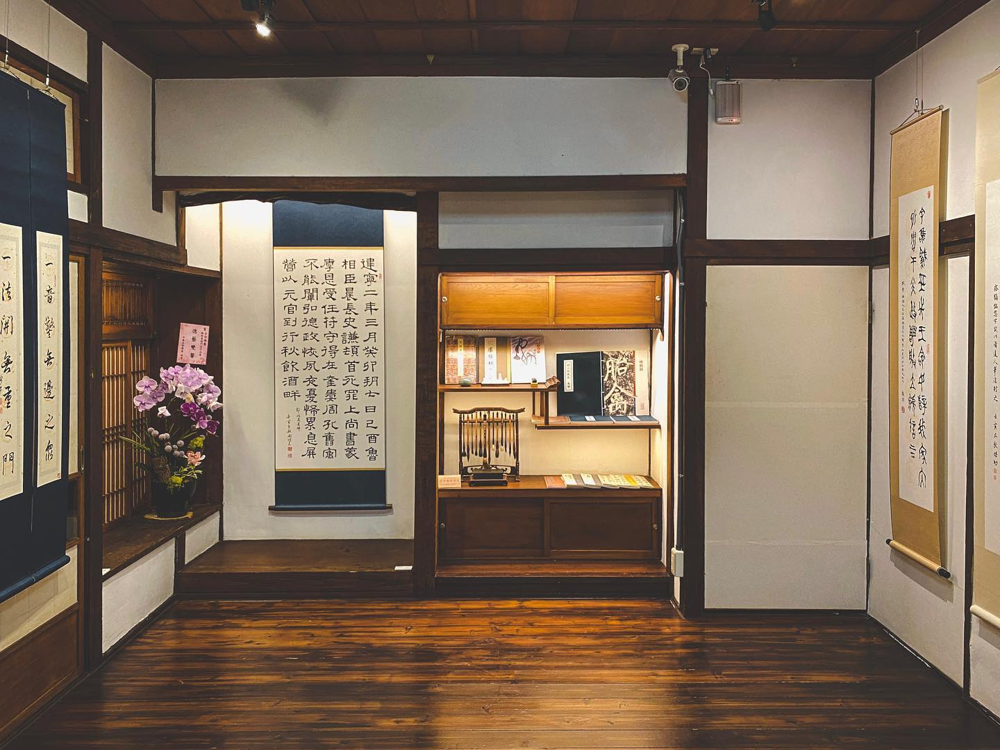
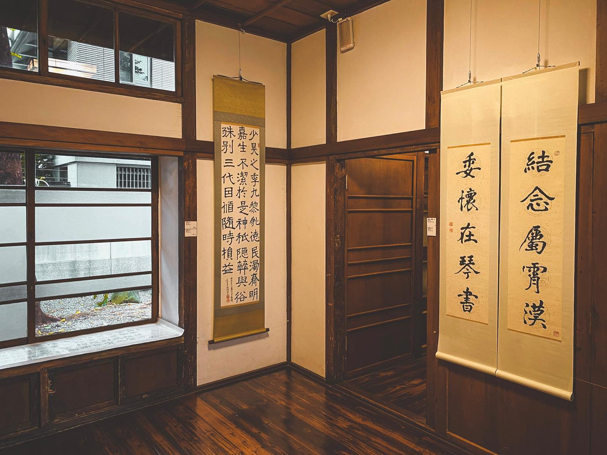

位於齊東街53巷11號的臺北琴道館，是一座建於1930年代的日式宿舍群，原為幸町區職務官舍群之一部分，在戰後改為臺銀宿舍群。這座建築保留了日式宿舍建築的特色，具有當時都市住宅群落的獨特風貌，因此具有保存價值。
臺北琴道館在2010年，被列為台北市市定古蹟。從2013年起由「社團法人中華古琹學會」管理，並成立了「臺北琴道館」，專注於推廣無形的世界文化遺產—古琹文化。
台北琴道館與台北書畫院，齊東街日式建築漫步之旅。
2024.07.04.jpg)
.jpg)
這座宿舍的設計巧思，充分考慮了臺灣潮濕的氣候。為了應對這樣的氣候特點，建築師們將居住的房屋抬高，以避免受潮濕的困擾。而窗臺下方特別設計的氣窗更是一個獨特之處，它們能夠增加通風，排除潮濕氣息。 日本傳統建築中，擁有床之間的和室被視為格局最高的房間，通常被稱為「座敷」，專門用於招待重要的訪客。在座敷內的床之間旁還有一個稱為「床脇」的空間，通常用於擺放書籍、茶具和藝術品。此外，天袋和地袋是指上下方的儲藏格，用於收納物品。這些空間結合了藝術、儀式和實用性，展現了日本傳統建築的精髓。


接著來到台北書畫院，與台北琴道院相同，這幾棟位於齊東街的日式宿舍群，建於1930年代，日治時期為幸町區職務官舍群，台灣光復後收編為台銀宿舍群，於2010年訂為市定歷史建物。
2009年，台北市政府文化局委託建築師孫啟榕先生開始修復臺北書畫院和臺北琹道舘的建築，除了保留了門廊、玄關和完整的室內空間，它還保存了樹石造景的元素。
2018年時，中華古琴學會擴展其經營管理範圍，除了開始管理台北琴道館外，也負責了一旁的歷史建築，並在此建立了台北書畫院。


台北琴道館與台北書畫院兩棟日式建築前後相鄰，加上鄰近齊東詩舍，讓這裡成了琴齊書畫皆通的台北藝文角落，也是充滿日式風情的老屋聚落。 琴道館現由中華古琴學會經營，致力於古琴文化推廣與傳承，以琴道為中心，結合書、畫、茶、香、花、拳等經典國學人文內涵，提供國人領略聆賞精緻高雅的古琴文化。 台北書畫院除了定期的藝術特展外，也開設書道班，提升民眾藝文氣息與陶冶性情，並營造在地特色及古蹟活化目的。 免費參觀的室內景點，無論晴雨，都能來這裡品味歷史人文與欣賞藝文展演，不要錯過了!
台北琴道館
地址：台北市中正區齊東街53巷11號
營業時間：週三~週日 10:00~17:00
台北書畫院
地址：台北市中正區金山南路一段30巷12號
營業時間：週三~週日 10:00~17:00